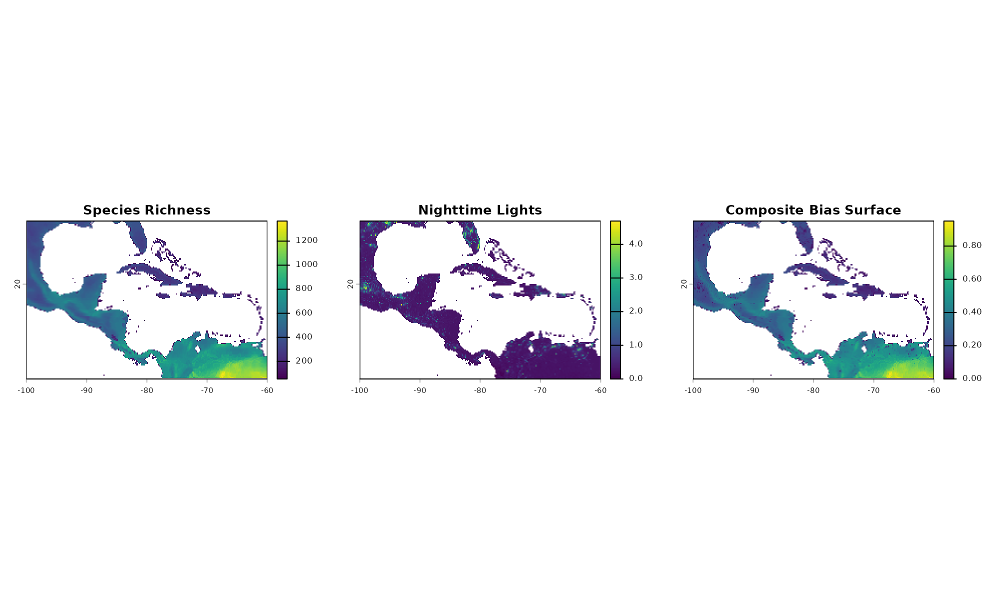
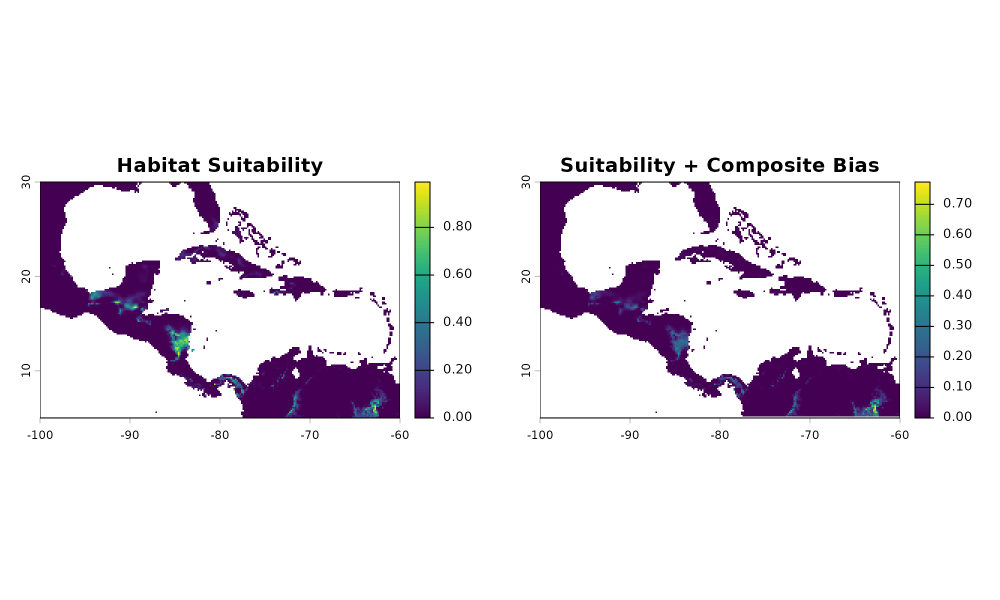

Description
Real-world biodiversity data is rarely collected systematically. Biologists often sample near roads, rivers, or research stations, creating spatial clustering that does not necessarily reflect optimal habitat.
The nicheR package allows you to simulate these spatial
sampling biases. This workflow involves two steps:
prepare_bias(): Standardizing raw environmental or anthropogenic covariates into probability-scaling surfaces.apply_bias(): Mathematically fusing those bias surfaces with your habitat suitability predictions.
Preparing the Bias Layer
Raw bias proxies (e.g., species richness, nighttime lights, distance
to roads) come in varying scales and units. prepare_bias()
resamples, aligns, and min-max standardizes these layers to a strict [0,
1] scale. If multiple layers are provided, it allows you to assign
unique directional effects to each before multiplying them into a single
composite surface.
Function Arguments
bias_surface: ASpatRaster(single or multi-layer) or a list ofSpatRasterobjects representing your raw bias proxies.-
effect_direction: Character vector dictating how the raw values map to sampling probability:"direct": Higher raw values = higher sampling probability (kept as is)."inverse": Higher raw values = lower sampling probability (transformed to1 - x).Note: If providing a multi-layer raster, you can pass a vector of directions mapping to each respective layer.
template_layer: OptionalSpatRaster. The reference layer used to align all bias layers (matching resolution, extent, and CRS). IfNULL, the algorithm automatically selects the finest-resolution layer from your input.include_composite: Logical. IfTRUE(default), the function outputs the combined, multiplied composite bias surface.include_processed_layers: Logical. IfTRUE, includes the standardized individual layers before they are multiplied together. Default isFALSE.-
mask_na: Logical. Controls howNA(NoData) pixels are handled across multiple layers:TRUE(Intersection): If a pixel isNAin any layer, the final composite pixel becomesNA.FALSE(Union - default): IgnoresNAs where other layers have valid values, preserving as much spatial coverage as possible.
verbose: Logical. IfTRUE, prints processing steps to the console.
Example: Mixed-Direction Composite Bias
In this example, our raw_bias raster contains two
layers: sp_richness and nighttime (nighttime
lights/urbanization).
Ecologically, sampling effort is likely highest in areas with known
high species richness, but lowest in highly urbanized areas. Therefore,
we will assign a "direct" effect to richness and an
"inverse" effect to nighttime lights to create a realistic
composite bias surface.
library(nicheR)
library(terra)
#> terra 1.9.11
# Load a sample bias layer containing 'sp_richness' and 'nighttime'
biases_file <- system.file("extdata", "ma_biases.tif", package = "nicheR")
raw_bias <- rast(biases_file)
# Prepare a composite bias surface mapping unique directions to each layer
prep_composite <- prepare_bias(bias_surface = raw_bias,
effect_direction = c("direct", "inverse"),
verbose = FALSE)
# --- Plotting the Output ---
par(mfrow = c(1, 3), mar = c(4, 4, 3, 2))
# Plot the raw inputs
plot(raw_bias[["sp_richness"]], main = "Species Richness")
plot(raw_bias[["nighttime"]], main = "Nighttime Lights")
# Plot the resulting unified bias probability surface
plot(prep_composite$composite_surface, main = "Composite Bias Surface")
dev.off()
#> null device
#> 1Notice how the final composite surface creates “hotspots” for
sampling in areas that feature both high species richness AND low
urbanization, accurately reflecting the combined
effect_direction parameter.
Applying Bias to Predictions
Once your bias surface is scaled between 0 and 1, you must integrate
it with your actual ecological prediction (e.g., habitat suitability).
apply_bias() aligns the grids and multiplies the
suitability by the bias. The resulting output is a weighted
surface, not a true biological probability.
Function Arguments
prepared_bias: A single-layerSpatRaster, or the list output generated byprepare_bias().prediction: ASpatRastercontaining your suitability predictions. Values must be within [0, 1].prediction_layer: Character. If yourpredictionraster has multiple layers, specify the exact name of the layer to use (e.g.,"suitability"). IfNULL, it defaults to the first layer.-
effect_direction: Character. Dictates how the prepared bias is applied to the suitability:"direct"(default): Multiplies suitability bias."inverse": Multiplies suitability .
verbose: Logical. IfTRUE, prints processing steps to the console.
Example: Comparing Applied Biases
Below, we take a standard suitability prediction and restrict it
using the composite bias layer we just prepared. We will apply it as a
"direct" multiplier, meaning areas with high composite bias
scores will retain their suitability, while areas with low bias scores
will be penalized.
# (Assuming 'pred' is a previously generated suitability raster from build_ellipsoid)
# Let's generate a quick prediction for this example
bios_file <- system.file("extdata", "ma_bios.tif", package = "nicheR")
bios <- rast(bios_file)
range_df <- data.frame(bio_1 = c(22, 28), bio_12 = c(1000, 3500), bio_15 = c(50, 70))
ell <- build_ellipsoid(range = range_df)
#> Starting: building ellipsoidal niche from ranges...
#> Step: computing covariance matrix...
#> Step: computing additional ellipsoidal niche metrics...
#> Done: created ellipsoidal niche.
pred <- predict(ell, newdata = bios, include_suitability = TRUE)
#> Starting: suitability prediction using newdata of class: SpatRaster...
#> Step: Ignoring extra predictor columns: bio_5, bio_6, bio_7, bio_13, bio_14
#> Step: Using 3 predictor variables: bio_1, bio_12, bio_15
#> Done: Prediction completed successfully. Returned raster layers: Mahalanobis, suitability
# Apply the composite bias to our suitability layer
applied_bias <- apply_bias(prepared_bias = prep_composite,
prediction = pred,
prediction_layer = "suitability",
effect_direction = "direct",
verbose = FALSE)
# --- Plotting the Output ---
par(mfrow = c(1, 2), mar = c(4, 4, 3, 2))
# Original Biological Suitability
plot(pred[["suitability"]], main = "Habitat Suitability")
# Suitability mathematically restricted by our composite sampling bias
plot(applied_bias[[1]], main = "Suitability + Composite Bias")
dev.off()
#> null device
#> 1In the final comparison, observe how the spatial footprint of the
species shrinks based on the bias layer. When drawing points from the
applied_bias raster using
sample_biased_data(), the algorithm is forced to ignore
large swaths of highly suitable habitat simply because the simulated
sampling effort (driven by nighttime lights and richness) in those areas
is too low.